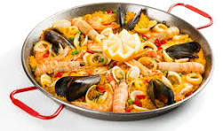

Paella

Description:
Paella is a traditional Spanish dish, originally
from the region of Valencia. It's a seasoned rice
dish cooked with a variety of ingredients, which
can include seafood, chicken, rabbit, vegetables,
and spices such as saffron and paprika. Known for
its robust flavor and distinctive golden layer of
caramelized rice at the bottom of the pan, paella
is a delicious and colorful expression of
Mediterranean cuisine.
Ingredients:
- Rice (preferably short-grain varieties like bomba rice)
- Fish or chicken broth (for cooking the rice)
- Saffron (for color and distinctive flavor)
- Olive oil
- Garlic
- Onion
- Red bell pepper
- Tomato
- Peas
- Green beans (optional)
- Seafood such as mussels, clams, prawns, shrimp, and squid
- Chicken (it can also be pork or duck, depending on the variation)
- Paprika
- Salt and pepper
Steps:
- Heat olive oil in a paella pan over medium heat.
- Add chopped onion, garlic, and red bell pepper to the pan. Sauté until softened.
- Add diced tomatoes and cook until they break down and become saucy.
- Stir in rice and sauté for a couple of minutes until it's well coated with the vegetable mixture.
- Pour in fish or chicken broth and add saffron threads for flavor and color. Season with salt, pepper, and paprika to taste.
- Arrange your choice of protein (such as chicken, rabbit, or seafood) evenly over the rice.
- Add peas and green beans on top.
- Bring the mixture to a simmer and let it cook undisturbed for about 20-25 minutes, or until the rice is cooked and has absorbed the liquid. (You can gently shake the pan occasionally to ensure even cooking.)
- Once the rice is done, remove the paella from heat and let it rest for a few minutes.
- Garnish with lemon wedges and chopped parsley before serving.
Enjoy your delicious homemade paella!